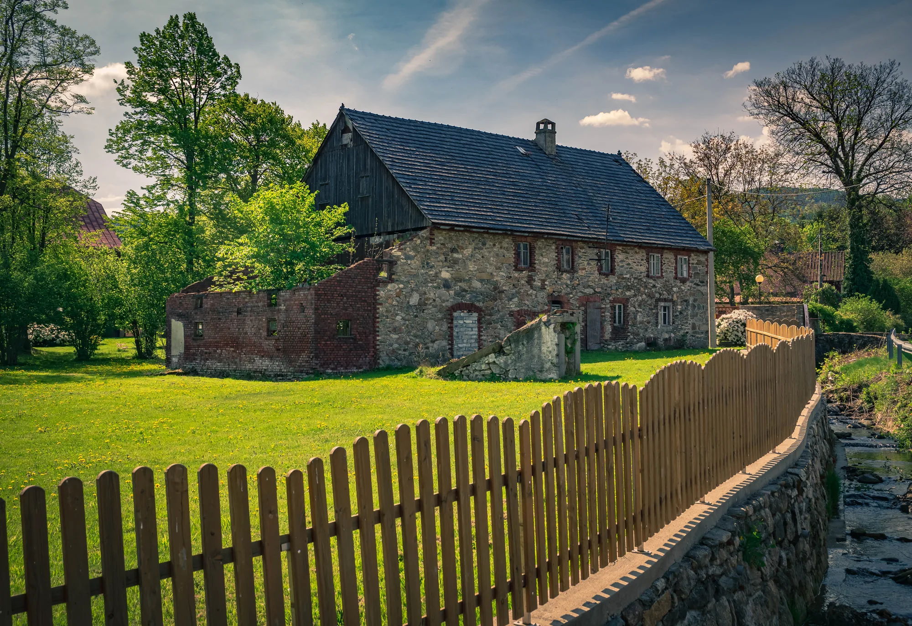

Ruinersi na Dolnym Śląsku
Practical exchange of knowledge about renovation, materials, specialists and the everyday challenges of owning an old house.
Join the groupThe Foundation grew out of a community of people brought together by a shared concern for old houses and the cultural landscape of Lower Silesia.

Photo: Dominik Jakielaszek
Ruinersi began as a space where owners of old houses could exchange experience. Today the community, the Foundation and the Cluster play different roles, but they share one aim: protecting valuable heritage.
Practical exchange of knowledge about renovation, materials, specialists and the everyday challenges of owning an old house.
Join the groupA place for historic houses looking for new custodians, and for people searching for a building worth saving.
Join the groupThe Foundation’s official profile: current projects, events, educational resources and updates on our work.
Follow the FoundationSee who we are as a community and what brings people around Ruinersi together.
We protect historic architecture, cultural landscapes and the authentic fabric of old buildings.
We show how to renovate old houses responsibly, identify risks and avoid irreversible mistakes.
We connect owners, craftspeople, architects, conservation professionals, experts, organisations and enthusiasts.
We bring the perspective of owners and civil-society organisations into collaboration with public administration, academia, local authorities and heritage professionals.